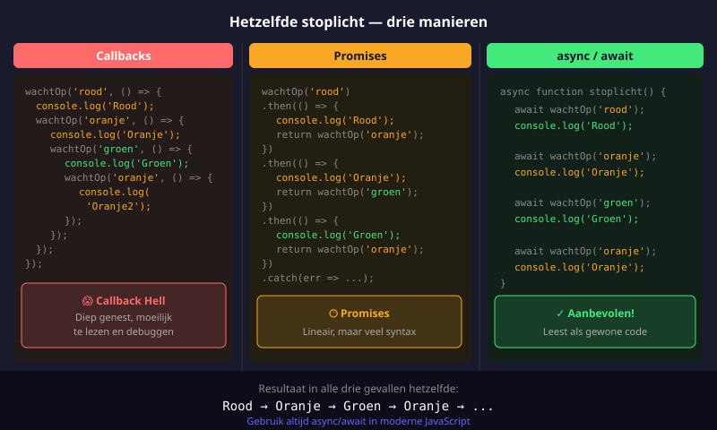
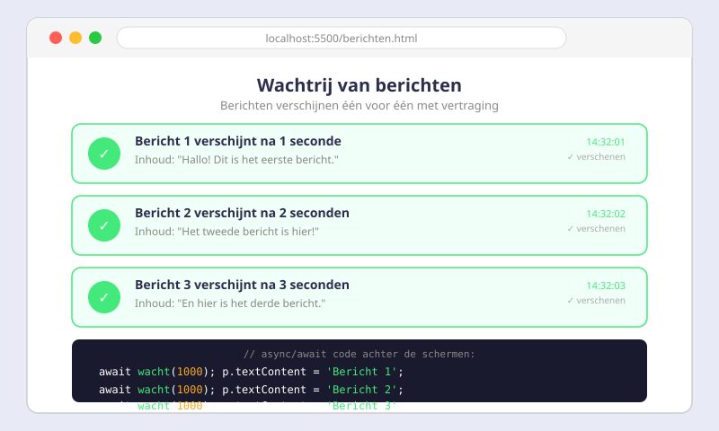

Async JavaScript
- Uitleggen wat het verschil is tussen synchrone en asynchrone code
- Begrijpen waarom JavaScript single-threaded is en wat dat betekent in de praktijk
- Een callback schrijven en uitleggen wat callback hell is
- Een Promise aanmaken met
new Promise((resolve, reject) => { ... }) - Een Promise-keten opzetten met
.then()en.catch() - Een
async-functie schrijven dieawaitgebruikt - Foutafhandeling toepassen met
try...catchin async-functies - De drie patronen (callbacks, Promises, async/await) naast elkaar herkennen en vergelijken
- Een publieke API opzoeken en bevragen met
fetch() - Een onderzoeksvraag formuleren, data ophalen en een conclusie trekken
19.1 Synchroon vs asynchroon
JavaScript is single-threaded
JavaScript heeft slechts één uitvoeringsthread — dat betekent dat er op elk moment maar één stuk code tegelijk uitgevoerd kan worden. Het probleem ontstaat bij trage bewerkingen zoals een netwerkverzoek of het wachten op een API-antwoord. Als zo'n operatie synchroon uitgevoerd zou worden, blokkeert de hele browser.
// Asynchroon — de browser blijft responsief
console.log('Start');
setTimeout(() => {
console.log('Na 2 seconden');
}, 2000);
console.log('Dit loopt onmiddellijk na setTimeout');
// Output:
// Start
// Dit loopt onmiddellijk na setTimeout
// Na 2 secondensetTimeout is asynchroon: JavaScript plant de callback in, gaat onmiddellijk verder, en roept de callback op na de opgegeven tijd.
19.2 Callbacks — de oude manier
Een callback is een functie die je meegeeft aan een andere functie, om later aangeroepen te worden. Dit is de eenvoudigste manier om asynchroon te werken.
function groetNa1Seconde(naam, callback) {
setTimeout(() => {
callback('Hallo, ' + naam + '!');
}, 1000);
}
groetNa1Seconde('Jana', (bericht) => {
console.log(bericht); // "Hallo, Jana!" — na 1 seconde
});Callback hell
Wanneer je meerdere asynchrone stappen na elkaar moet uitvoeren, nest je callbacks in callbacks — het resultaat heet callback hell of de "pyramid of doom":
setInterval(() => {
groen.setAttribute('class', 'active');
setTimeout(() => {
groen.removeAttribute('class');
oranje.setAttribute('class', 'active');
setTimeout(() => {
oranje.removeAttribute('class');
rood.setAttribute('class', 'active');
setTimeout(() => {
rood.removeAttribute('class');
}, 3000); // rood uit
}, 1500); // oranje uit
}, 3000); // groen uit
}, 8000);
Nadelen van callbacks:
- Moeilijk leesbaar: De logische volgorde is verborgen in de nesting
- Error-handling per niveau: Je moet bij elke callback afzonderlijk fouten opvangen
- Moeilijk onderhoudbaar: Extra stappen toevoegen betekent nog dieper nesten
19.3 Promises
Een Promise is een object dat een toekomstige waarde vertegenwoordigt. Een Promise heeft altijd één van drie staten:
| Staat | Betekenis |
|---|---|
pending | Bezig — het resultaat is nog niet bekend |
fulfilled | Geslaagd — het resultaat is beschikbaar |
rejected | Mislukt — er is een fout opgetreden |
const mijnPromise = new Promise((resolve, reject) => {
const succes = true;
if (succes) {
resolve('Het is gelukt!'); // Promise fulfilled
} else {
reject('Er is iets fout gegaan.'); // Promise rejected
}
});
mijnPromise
.then((resultaat) => {
console.log(resultaat); // "Het is gelukt!"
})
.catch((fout) => {
console.error(fout); // Enkel als reject() werd aangeroepen
});De setTimeOutAsync-wrapper
Om setTimeout te kunnen gebruiken met Promises, maak je een wrapper. De resolve-functie wordt direct als callback meegegeven:
export const setTimeOutAsync = function (msec) {
return new Promise((resolve) => {
setTimeout(resolve, msec);
});
};Het stoplicht met Promises
setInterval(() => {
groen.setAttribute('class', 'active');
setTimeOutAsync(3000)
.then(() => {
groen.removeAttribute('class');
oranje.setAttribute('class', 'active');
return setTimeOutAsync(1500); // geef de volgende Promise terug
})
.then(() => {
oranje.removeAttribute('class');
rood.setAttribute('class', 'active');
return setTimeOutAsync(3000);
})
.then(() => {
rood.removeAttribute('class');
})
.catch((e) => {
console.error(e); // centrale foutafhandeling
});
}, 8000);19.4 async / await
async/await is syntactische suiker bovenop Promises — onder de motorkap werkt alles nog steeds met Promises, maar de code leest als gewone synchrone code.
// async vóór de functie: deze functie is asynchroon en retourneert altijd een Promise
async function haalDataOp() {
// await: wacht hier tot de Promise afgehandeld is
const resultaat = await setTimeOutAsync(2000);
console.log('2 seconden later');
}asyncvóórfunctionmaakt de functie asynchroonawaitkan alleen binnen eenasync-functie gebruikt worden- Een
async-functie retourneert altijd een Promise, ook als jereturn 42schrijft
Foutafhandeling met try...catch
async function laadGebruiker(id) {
try {
const data = await haalGebruikerOp(id); // kan mislukken
console.log('Gebruiker:', data.naam);
} catch (fout) {
console.error('Kon gebruiker niet laden:', fout);
}
}Het stoplicht met async/await
checkbox.addEventListener('change', async (evt) => {
while (checkbox.checked) {
try {
groen.setAttribute('class', 'active');
await setTimeOutAsync(3000);
groen.removeAttribute('class');
oranje.setAttribute('class', 'active');
await setTimeOutAsync(1500);
oranje.removeAttribute('class');
rood.setAttribute('class', 'active');
await setTimeOutAsync(3000);
rood.removeAttribute('class');
} catch (e) {
console.log('Er is een fout opgetreden: ' + e);
}
}
});Vergelijking: drie aanpakken naast elkaar
| Callbacks | Promises | async/await | |
|---|---|---|---|
| Leesbaarheid | Moeilijk (nesting) | Goed (lineair) | Uitstekend (zoals sync) |
| Error-handling | Per callback | Centrale .catch() | try...catch |
| Debuggen | Moeilijk | Matig | Eenvoudig |
| Gebruik vandaag | Verouderd patroon | Nog courant | Aanbevolen |
19.5 Van fetch() naar onderzoek
Nu je fetch() begrijpt, kan je elke publieke API bevragen. Dit opent de deur naar echte onderzoeksvragen: je kiest een dataset, stelt een vraag, analyseert de data en trekt een conclusie.
De onderzoekscyclus
- Probleemstelling / onderzoeksvraag — Wat wil je weten? (bv. "Welke landen hebben de meeste inwoners?")
- Bronnenonderzoek — Welke API geeft me die data? Hoe werkt die API?
- Experiment — Schrijf code die de data ophaalt en verwerkt
- Conclusie — Wat antwoordt de data op jouw vraag? Wat zijn de beperkingen?
Publieke API's voor onderzoek
| API | Wat geeft het terug | URL |
|---|---|---|
| REST Countries | Land, bevolking, vlag, continent | https://restcountries.com/v3.1/all |
| Open-Meteo | Weerdata voor elke locatie | https://open-meteo.com |
| PokeAPI | Pokémon-data | https://pokeapi.co |
| OpenLibrary | Boeken en auteurs | https://openlibrary.org |
Volg altijd de documentatie van de API. Kijk op de officiële website welke endpoints beschikbaar zijn en welke parameters je kan meegeven. Dit is een essentiële vaardigheid voor elke developer.
Oefeningen
Schrijf een functie wacht(seconden) die een Promise retourneert. Gebruik async/await en de wacht-functie om drie berichten na elkaar te tonen, telkens met een vertraging van 1 seconde.
// Stap 1: schrijf de wacht-functie
function wacht(seconden) {
return new Promise((resolve) => {
// Vul aan...
});
}
// Stap 2: gebruik async/await om de berichten na elkaar te tonen
async function toonBerichten() {
console.log('Bericht 1');
await wacht(1);
console.log('Bericht 2');
await wacht(1);
// Vul aan...
}
toonBerichten();
Uitbreiding: Pas de functie aan zodat de berichten ook in de DOM verschijnen in een <ul>-lijst, in plaats van in de console.
Gegeven de onderstaande code: wat is de output? Schrijf je antwoord op vóór je de code uitvoert, en controleer daarna in de browser.
async function test() {
console.log('voor');
await wacht(1);
console.log('na');
}
test();
console.log('buiten');Leg uit waarom de output in die volgorde verschijnt. Gebruik de begrippen "event loop", "synchrone code" en "await" in je uitleg.
Schrijf een async functie laadData(url) die:
- Een Promise aanmaakt die na 500ms resolved met
"Data van " + url - Maar met een kans van 50% reject met de fout
"Server niet bereikbaar" - De resultaten en fouten netjes afhandelt met
try...catch - De functie 5 keer aanroept en het resultaat logt
Huistaak
SV01.01 / SV07.08 / ADB04
Opdracht: Mini-onderzoek met een publieke API
Deel 1 — Onderzoeksvraag (2 punten)
Kies een publieke API uit de tabel hierboven (of een andere die je zelf vindt op public-apis.io).
Schrijf je onderzoeksvraag op in een HTML-commentaar bovenaan je bestand:
<!-- Onderzoeksvraag: Welke 5 landen hebben de meeste inwoners? -->
<!-- API: REST Countries -->Deel 2 — Experiment: de webpagina (6 punten)
Schrijf een webpagina (1 HTML + 1 JS bestand) die:
- De API bevraagt met
fetch()enasync/await - De data filtert of sorteert om je vraag te beantwoorden
- Het resultaat toont in de browser (als lijst, tabel of kaarten — jouw keuze)
- Laadstatus toont terwijl de data wordt opgehaald (bv. "Gegevens laden...")
- Een foutmelding toont als de API niet bereikbaar is
Deel 3 — Conclusie (2 punten)
Voeg onderaan je pagina een <section id="conclusie"> toe met:
- Antwoord op je onderzoeksvraag in maximaal 5 zinnen
- Minstens 1 beperking van jouw aanpak (bv. "De data is van 2023 en kan verouderd zijn")
Totaal: 10 punten
Vragenlijst
Controleer of je de leerstof van dit hoofdstuk begrijpt.
Wat betekent het dat JavaScript single-threaded is?
Wat is de output van console.log('A'); setTimeout(()=> console.log('B'), 0); console.log('C');?
Welke methode gebruik je om een fout te signaleren vanuit een Promise-constructor?
Wat is de uitvoer van: async function test() { console.log('voor'); await wacht(1); console.log('na'); } test(); console.log('buiten');?
Wanneer gebruik je .catch() in een Promise-keten?
Welk patroon is vandaag het meest aanbevolen voor nieuwe asynchrone code?